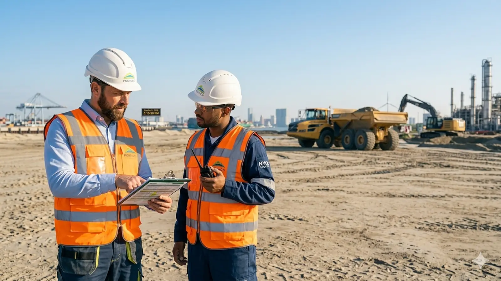

NEBOSH IGC (International General Certificate) is het meest gevraagde instapdiploma voor HSE-professionals die internationaal willen werken. In 2026 bestaat de opleiding uit twee onderdelen: IG1 (management en theorie, open-book examen) en IG2 (praktische risk assessment). Reken op 3 tot 4 maanden studie, 8–10 uur per week, en totale kosten vanaf circa €3.500 all-in bij een Nederlandstalige aanbieder. In deze gids lees je alles — zonder salespraat.
Wat is NEBOSH IGC?
NEBOSH staat voor National Examination Board in Occupational Safety and Health. De International General Certificate (IGC) is hun wereldwijde instapdiploma op het gebied van arbeids- en bedrijfsveiligheid (HSE). Het is vergelijkbaar met wat MVK/HVK in Nederland is — maar dan internationaal erkend in meer dan 120 landen.
Wie NEBOSH IGC op zak heeft, kan solliciteren op HSE-rollen in havens, offshore, olie & gas, bouw, logistiek, energie en internationale projecten. In Nederland en België is het vooral interessant als je naast de lokale markt ook internationale ZZP-opdrachten of opdrachten in de Benelux-havens wilt aantrekken.
Wil je eerst een kortere uitleg? Lees ook: Wat is NEBOSH IGC?
IG1 en IG2: hoe is de opleiding opgebouwd?
Sinds de syllabus-update bestaat NEBOSH IGC uit twee afzonderlijke assessments. Je behaalt pas het volledige diploma als beide onderdelen zijn afgerond:
- IG1 — Management of health and safety: theorie-examen over HSE-management, wetgeving, risico's en preventie. Dit is een open-book online examen in het Engels. Je mag je studiemateriaal gebruiken, maar moet wel snel en zelfstandig kunnen redeneren.
- IG2 — Risk assessment: een praktische opdracht waarin je een workplace risk assessment uitvoert en documenteert. Geen klassiek tentamen, wel een beoordeling van je vakinhoudelijke aanpak.

Meer over IG2? Bekijk onze uitleg over de NEBOSH IG2 risk assessment praktijkopdracht of oefen met 20 gratis IG1-oefenvragen.
NEBOSH IGC kosten in 2026 — overzicht
De totale kosten hangen af van aanbieder, studievorm en of examengeld is inbegrepen. Onderstaande tabel geeft een realistisch beeld voor Nederlandstalige studenten in 2026:
| Onderdeel | Indicatie 2026 | Toelichting |
|---|---|---|
| Opleiding all-in (NL) | €3.500 | Bij SafetyXAcademy Rotterdam: les, begeleiding, examengeld IG1 + IG2 |
| Los examengeld (indicatie) | €200–€400 per unit | Als je los staat ingeschreven; bij all-in pakketten meestal inbegrepen |
| Studiemateriaal | Inbegrepen | Officieel NEBOSH-materiaal (Engels) via de opleider |
| Herexamen | €150–€350 per poging | Alleen relevant als je een onderdeel niet haalt |
| Tijd (opportunity cost) | 8–10 uur/week | 3–4 maanden naast werk; geen extra euro's, wel reëel meenemen |
Tip: vergelijk altijd wat “all-in” precies dekt. Sommige aanbieders rekenen examengeld, resits of klassikale dagen apart. Onze NEBOSH IGC opleiding in Rotterdam is €3.500 all-in voor september 2026.
Doorlooptijd: hoe lang duurt NEBOSH IGC?
De meeste studenten ronden NEBOSH IGC af in 3 tot 4 maanden. Dat is een blended traject:
- Online modules — flexibel, in eigen tempo, naast je baan
- Klassikale dagen in Rotterdam — voor uitleg in het Nederlands, examencoaching en peer learning
- Zelfstudie — reken op gemiddeld 8 tot 10 uur per week (lezen, oefenen, IG2-voorbereiding)
IG1 en IG2 hoef je niet tegelijk af te ronden, maar de meeste opleiders plannen ze in één cohort. Plan je examens ruim: populaire examenperiodes kunnen vol zitten.
Het examen: Engels, open book, en hoe moeilijk is het?
Dit is waar veel Nederlandstalige kandidaten spannend van worden. De feiten:
- Het studiemateriaal en de examens zijn in het Engels. NEBOSH adviseert ongeveer B2-niveau.
- IG1 is open book: je mag je boek gebruiken, maar de vragen testen begrip — niet letterlijk opzoeken.
- IG2 is praktisch: je levert een risk assessment in die voldoet aan NEBOSH-criteria.
- MVK is geen vereiste. VCA, technische achtergrond of HSE-werkervaring is vaak genoeg als instap.
Met Nederlandstalige uitleg, examencoaching en oefenmateriaal is IGC goed haalbaar voor gemotiveerde studenten. Test je niveau gratis met onze NEBOSH quiz (20 vragen, alle IG1-elementen).
Wil je weten wat er precies veranderd is ten opzichte van IG1 en IG2? Lees onze uitleg over het nieuwe NEBOSH IGC examen 2026.
Voor wie is NEBOSH IGC bedoeld?
De opleiding past bij:
- HSE officers, veiligheidskundigen en preventiemedewerkers die internationaal willen doorstromen
- Supervisors, teamleiders en technici (haven, offshore, bouw, industrie) die HSE-verantwoordelijkheid krijgen
- ZZP'ers die hogere dagtarieven in havens willen aantrekken
- Mensen met VCA of MVK-ambities die bewust kiezen voor het internationale pad (NEBOSH vs MVK vergelijking)
Minder geschikt als je uitsluitend in Nederland wilt blijven werken zonder internationale ambitie — dan kan MVK/HVK soms directer aansluiten. Maar zodra havens, offshore of expat-opdrachten in beeld komen, is IGC vaak de betere investering.
NEBOSH IGC vs MVK: welke kies je?
Kort samengevat:
- MVK/HVK: sterk in Nederland, diepgaande NL-wetgeving, hogere instapkosten, langere doorlooptijd
- NEBOSH IGC: internationaal erkend, korter traject, Engels examen, ideaal voor havens/offshore/expat
Onze uitgebreide vergelijking staat in NEBOSH vs MVK: wat is beter voor jouw carrière? — inclusief kosten, erkenning en carrièrepaden.
Waar NEBOSH IGC volgen in Nederland?
NEBOSH zelf geeft geen klassikale lessen; je volgt de opleiding via een accredited learning partner. In Nederland zijn er online-only trajecten en blended opleidingen met fysieke lesdagen.
SafetyXAcademy biedt een Nederlandstalige NEBOSH IGC in Rotterdam (Veerhaven, Westplein 12):
- Max. 10 studenten per groep
- Les in het Nederlands, examen in het Engels
- €3.500 all-in
- Start september 2026
Studenten uit Nederland en België zijn welkom. Meer details op de opleidingspagina of onze Rotterdam student guide.
Veelgestelde vragen over NEBOSH IGC
Wat kost NEBOSH IGC in 2026?
All-in vanaf circa €3.500 bij SafetyXAcademy (les + examengeld). Reken daarnaast op 8–10 uur zelfstudie per week; geen verborgen verplichtingen buiten eventuele herexamens.
Hoe lang duurt NEBOSH IGC?
Gemiddeld 3 tot 4 maanden blended studie, daarna IG1-examen en IG2-opdracht. Combineerbaar met fulltime werk.
Is het examen in het Engels?
Ja. Studiemateriaal, IG1 en IG2 zijn in het Engels. Nederlandstalige uitleg in de klas helpt, maar je moet examenvragen in het Engels kunnen beantwoorden.
Heb ik MVK nodig?
Nee. IGC is een zelfstandig instapdiploma. Veel studenten hebben VCA, werkervaring of een technische achtergrond.
Waar wordt NEBOSH IGC erkend?
Internationaal in 120+ landen. In de Benelux vooral relevant voor havens (Rotterdam, Antwerpen), offshore, industrie en internationale projecten.
Volgende stap: start september 2026
NEBOSH IGC is een serieuze investering in je HSE-carrière — maar wel een met meetbaar rendement: internationale erkenning, betere ZZP-marktpositie en toegang tot opdrachten die zonder diploma dichtblijven.
Aanmelden wachtlijst september 2026 →
Of bekijk eerst de opleiding in detail, doe de gratis oefentest, of lees over HSE jobs & ZZP-opdrachten na je diploma.
Laatst bijgewerkt: 16 juni 2026. Kosten en startdata kunnen wijzigen; check altijd de actuele opleidingspagina voor definitieve prijzen.